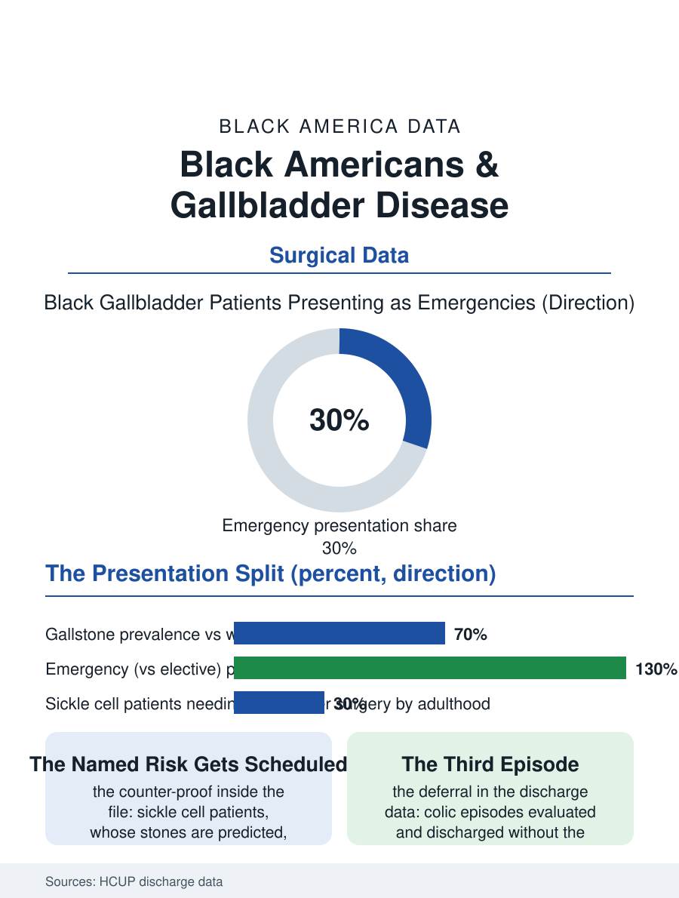

Black Public Health
Scheduled or Emergency: Black Americans and Gallbladder Disease
Fewer stones, more emergencies: the gallbladder's scheduled-versus-emergency split is the access file written in one small organ. The gallbladder file.

Gallbladder disease sends more Americans to the operating room than almost any other abdominal condition, and its pattern in Black Americans runs against the usual gradient in an instructive way: gallstones themselves are less common than in the white population, while the disease's complications and the emergency character of the surgery run heavier. The hospital discharge data compose the pattern. This article reads the gallbladder file.
Stones, Pigment, and the Sickle Connection
The stone file divides by chemistry: the cholesterol stones of the metabolic pattern, whose prevalence tracks the obesity and diet files and which are most common in the white and Hispanic populations, and the pigment stones, formed from the blood's breakdown products, whose prevalence in Black Americans carries a specific cause in the sickle cell file, the chronic hemolysis of sickle cell disease and trait producing the bilirubin load from which the black pigment stones form, so that the gallbladder becomes, for the sickle cell population, a predictable surgical destination, the cholecystectomy often performed in childhood or young adulthood as the stones declare themselves. The population prevalence data outside the sickle connection put Black gallstone rates below the white figure, one of the health file's few favorable comparisons, with the risk profile by sex and age following the universal pattern, women and the older carrying the higher burden. The disease's presentation is the file's hinge: the biliary colic's textbook arc, the right upper pain after the fatty meal, resolves in the clinic's schedule for some and in the emergency department's for others, and the Black patient's presentation, in the discharge data, is disproportionately the emergency, the inflamed gallbladder and the obstructed duct rather than the scheduled case. The duct stone and pancreatitis complications at the file's severe end follow the same presentation logic with higher stakes, their advanced interventions concentrated in the tertiary centers whose transfer patterns add the road's hours to the inflammation's, in the pattern of the appendicitis file's transfers.
The Emergency's Premium
The surgical data price the presentation's difference: the emergency cholecystectomy carries higher complication and conversion-to-open rates than the elective laparoscopic operation that is among surgery's most refined procedures, and the Black patient's overrepresentation in the emergency column composes a disproportionate share of the operation's total harm in the outcomes data. The access file explains the column's composition in its usual terms: the colic's earlier episodes evaluated in the emergency department and discharged without the surgical referral completed, the uninsured and underinsured patient's elective operation deferred by the coverage's absence until the inflammation forces the issue at the emergency's price, the safety-net surgical clinic's backlog standing between the diagnosis and the scheduled date. The imaging and evaluation cascade shows the encounter file's pattern in miniature, the ultrasound's timeliness and the surgical consultation's threshold distributing by the hospital the ambulance chose. The post-operative file is short for the elective case and long for the emergency's, the bile duct injuries and the readmissions of the complications ledger falling where the presentation file predicted.
A Small Organ's Whole Lesson
The gallbladder file closes as the purest form of the section's recurring argument, because the condition is common, the operation is excellent, and the difference between the scheduled and the emergency version is almost entirely the biography of the patient's access rather than the biology of the disease, the sickle cell chapter excepted and instructive in the opposite direction: there the system, knowing the stones are coming, often operates on schedule, and the sickle cell patient's gallbladder outcomes are the file's evidence of what the anticipatory model achieves when a population's risk is named and planned for. The elective system's failure to extend the same anticipation to the ordinary Black patient's colic is therefore a choice the data can locate precisely, in the referral not completed and the coverage not held. The discharge data count the operations in the hundreds of thousands nationally. The file's last entry is the colic's third episode, the one the patient rides out at home with the heating pad because the last emergency visit produced a bill and no operation, the episode the data count, weeks later, as the emergency admission whose complications the elective calendar was built to prevent.
More in Black Public Health
Hypertension Among Black Adults: Prevalence, Control, and Consequences
About 55 percent of Black adults have hypertension — the highest rate of any U.S. group. Prevalence, onset, control, and the stroke, heart, and kidney consequences in the data.
Diabetes Among Black Adults: Prevalence and Complications
Nearly one in five Black adults has diabetes, diagnosed or undiagnosed — and its complications fall with particular weight. The CDC data on prevalence, control, and outcomes.
Black Life Expectancy: The Gap at Birth and Its Causes
Black life expectancy at birth is about 73 years, roughly five years below the national figure — the summary measure of every health gap in this section. The CDC data.
Source: Agency for Healthcare Research and Quality, Healthcare Cost and Utilization Project; gallbladder disease epidemiology literature.